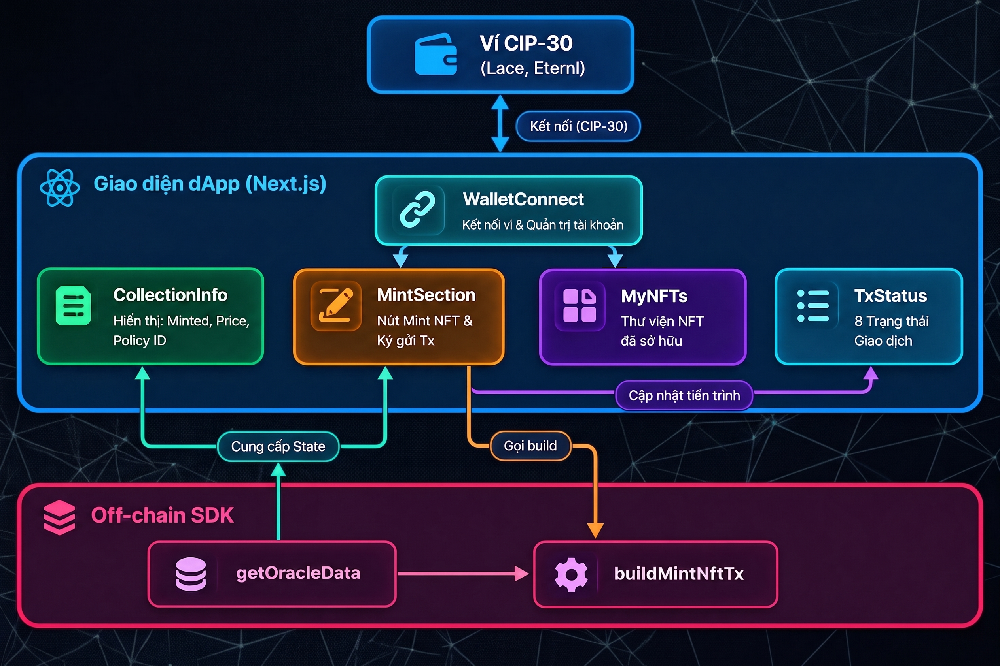

Mục lục bài học
Sơ đồ dưới đây mô tả chi tiết luồng tương tác giữa các component trên giao diện (Front-end Next.js) và lớp Off-chain trong quá trình kết nối ví, đọc trạng thái Oracle và điều phối giao dịch:

Kiến trúc giao diện dApp được module hóa thành các component chuyên biệt:
WalletConnect (Kết nối ví & Quản trị tài khoản):
MintSection: Cung cấp đối tượng ví để ký (wallet.signTx) và phát tán giao dịch (wallet.submitTx).MyNFTs: Cung cấp kết nối để quét danh mục tài sản phục vụ cho việc lọc và hiển thị các thẻ thành viên người dùng sở hữu.CollectionInfo (Bảng thông tin Bộ sưu tập):
getOracleData để hiển thị các thông tin của bộ sưu tập:
MintSection (Điều phối Mint NFT & Ký gửi Giao dịch):
buildMintNftTx từ tầng Off-chain để tạo giao dịch thô.status) sang component TxStatus để hiển thị tiến độ cho người dùng.TxStatus (Hiển thị trạng thái giao dịch):MyNFTs (Thư viện cá nhân):Lớp off-chain đóng vai trò cầu nối giữa giao diện người dùng và hợp đồng thông minh on-chain, thực hiện 2 nhiệm vụ cốt lõi:
getOracleData: Quét và giải mã Oracle Datum từ Oracle UTxO đang hoạt động trên mạng lưới → Cung cấp State cho CollectionInfo hiển thị và cho MintSection kiểm tra điều kiện mint. Dữ liệu này đồng thời là đầu vào bắt buộc của hàm dựng giao dịch buildMintNftTx.buildMintNftTx: Nhận yêu cầu từ MintSection để lắp ráp giao dịch mint NFT tuân thủ chặt chẽ các quy tắc ràng buộc của cả hai validator oracle.ak và nft_mint.ak.Hệ thống Membership NFT vận hành tuần tự qua 3 giai đoạn, mỗi giai đoạn được đại diện bởi một loại giao dịch đặc thù:
oracle.ak kèm dữ liệu Datum với số thứ tự khởi đầu bằng 1 → Oracle UTxO đầu tiên.#N + 1).setup-oracle.ts)Trước khi dApp có thể hoạt động, Admin phải chạy script setup-oracle.ts một lần duy nhất để mint Oracle NFT và khởi tạo Oracle UTxO.
Bước 1: Chọn Param UTxO
Truy vấn danh sách UTxO trong ví admin và chọn UTxO đầu tiên làm paramUtxo:
const adminUtxos = await adminWallet.getUtxos();
const paramUtxo = adminUtxos[0]!;Bước 2: Apply Parameters cho Scripts & Tính địa chỉ
Sử dụng các hàm trợ giúp để tính toán mã CBOR, Policy ID của One-shot, và địa chỉ Oracle.
const oneShotCbor = getOneShotCbor(paramUtxo.input);
const oracleNftPolicyId = resolveScriptHash(oneShotCbor, "V3");
const { oracleAddress } = getMembershipScripts(oracleNftPolicyId);Bước 3: Chuẩn bị Oracle Datum khởi tạo
Khởi tạo trạng thái ban đầu cho Oracle theo đúng cấu trúc OracleDatum của Aiken, gồm 3 dữ liệu: Số thứ tự (bắt đầu từ #1), mức giá mint cơ sở (MINT_PRICE_LOVELACE khai báo trong file .env), và địa chỉ Admin nhận tiền:
const { pubKeyHash, stakeCredentialHash } = deserializeAddress(adminAddress);
const initialDatum = mConStr0([
1, // first index = 1
MINT_PRICE_LOVELACE, // min_price (lovelace)
mPubKeyAddress(pubKeyHash, stakeCredentialHash), // admin_address
]);Cơ chế đóng gói kiểu
Addresssang Plutus Data:
Trên hợp đồng Aiken,Addresskhông phải là chuỗi địa chỉ Bech32 (addr_test1...) mà là cấu trúc dữ liệu gồmpayment_credentialvàstake_credential. Khi chuyển sang biểu diễn Plutus, nó là một loạt các constructor lồng nhau. Để đơn giản hóa việc tạo giá trị Address dạng Plutus Data, chúng ta sử dụng các hàm trợ giúp của Mesh:
-deserializeAddress: Bóc tách chuỗi địa chỉ Bech32 thành cặp mã băm 28-byte (pubKeyHashvàstakeCredentialHash).
-mPubKeyAddress: Đóng gói 2 mã băm trên thành biểu diễn Plutus Data củaAddress, giúp hợp đồng on-chain nhận diện chính xác địa chỉ ví.
Bước 4: Xây dựng, Ký và Gửi Setup Transaction
Sử dụng MeshTxBuilder để xây dựng giao dịch: tiêu thụ đúng paramUtxo đã cam kết, mint đúng 1 Oracle Token (STT), chuyển token này vào địa chỉ script oracleAddress kèm initialDatum. Sau đó ký và submit giao dịch lên mạng lưới:
const unsignedTx = await txBuilder
// Tiêu thụ paramUtxo (đảm bảo điều kiện của one-shot)
.txIn(
paramUtxo.input.txHash,
paramUtxo.input.outputIndex,
paramUtxo.output.amount,
paramUtxo.output.address
)
// Mint +1 Oracle Token bằng one-shot policy
.mintPlutusScriptV3()
.mint("1", oracleNftPolicyId, oracleTokenNameHex)
.mintingScript(oneShotCbor)
.mintRedeemerValue(mConStr0([])) // Action::Minting (index 0)
// Gửi Oracle Token đến oracle address với datum khởi tạo
.txOut(oracleAddress, [{ unit: oracleNftPolicyId + oracleTokenNameHex, quantity: "1" }])
.txOutInlineDatumValue(initialDatum)
.txInCollateral(
collateral.input.txHash,
collateral.input.outputIndex,
collateral.output.amount,
collateral.output.address
)
.changeAddress(adminAddress)
.selectUtxosFrom(adminUtxos)
.complete();
const signedTx = await adminWallet.signTx(unsignedTx);
const txHash = await adminWallet.submitTx(signedTx);Bước 5: In ra ORACLE_POLICY_ID để cấu hình Frontend
Sau khi giao dịch được gửi thành công, script sẽ in ra oracleNftPolicyId để đưa vào cấu hình biến môi trường NEXT_PUBLIC_ORACLE_POLICY_ID của Frontend:
console.log(`NEXT_PUBLIC_ORACLE_POLICY_ID=${oracleNftPolicyId}`);Để khởi chạy toàn bộ quy trình trên, thực thi lệnh sau tại thư mục gốc của dự án:
npm run setupLệnh này sẽ kích hoạt script tsx scripts/setup-oracle.ts. Sau khi giao dịch được gửi thành công, script sẽ in ra oracleNftPolicyId:
NEXT_PUBLIC_ORACLE_POLICY_ID=<oracle_policy_id>Sao chép mã Policy ID này và dán vào file cấu hình .env của ứng dụng Frontend để các component giao diện có thể nhận diện đúng Oracle khi chạy dApp.
oracle.ts)Hàm getOracleData trong oracle.ts chịu trách nhiệm tìm kiếm Oracle UTxO trên mạng lưới thông qua Blockfrost và giải mã trạng thái on-chain hiện tại của dApp:
Truy vấn danh sách UTxO tại địa chỉ Oracle:
Sử dụng provider để quét toàn bộ UTxO đang nằm tại địa chỉ script oracleAddress:
const utxos = await provider.fetchAddressUTxOs(oracleAddress);Lọc tìm Oracle UTxO chính chủ (chứa State Thread Token):
Trong Cardano, định danh unit của tài sản là chuỗi ghép policyId + assetNameHex. Vì vậy, dùng .startsWith(oracleNftPolicyId) sẽ xác định chính xác token thuộc policy này. Kết hợp với tính độc bản của One-Shot policy, trên toàn blockchain chỉ có duy nhất một UTxO thỏa mãn:
const oracleUtxo = utxos.find((u) =>
u.output.amount.some((a) => a.unit.startsWith(oracleNftPolicyId))
);Giải mã Plutus Data (Inline Datum):
Trích xuất dữ liệu Plutus thô từ output của UTxO và giải mã thành đối tượng OracleDatum để đọc số thứ tự NFT kế tiếp (nextNftIndex), mức giá mint tối thiểu (minPrice) và địa chỉ ví Admin (adminAddress):
const rawDatum = oracleUtxo.output.plutusData;
if (!rawDatum) throw new Error("Oracle UTxO missing plutusData");
const oracleDatum: OracleDatum = deserializeDatum(rawDatum);
const nextNftIndex = Number(oracleDatum.fields[0].int);
const minPrice = Number(oracleDatum.fields[1].int);
const adminAddress = serializeAddressObj(oracleDatum.fields[2], NETWORK_ID);Chuyển đổi address object (Plutus Data) thành địa chỉ Bech32:
-oracleDatum.fields[2]: Dữ liệu địa chỉ lưu trong Datum ở dạng cấu trúc Plutus Data (gồm các constructor lồng nhau chứapubKeyHashvàstakeCredentialHash), chưa phải là chuỗi địa chỉ Bech32 thông thường.
- HàmserializeAddressObj: Thực hiện quá trình ngược lại với {deserializeAddress+mPubKeyAddress}. Hàm này đọc các mã băm từ cấu trúc Plutus Data, kết hợp vớiNETWORK_ID(0: Testnet/Preprod, 1: Mainnet) để mã hóa thành chuỗi địa chỉ Bech32 chuẩn (addr_test1...). Chuỗi này là bắt buộc để truyền vào lệnh trả tiền.txOut(adminAddress, ...)khi người dùng mint NFT.
mint.ts)Hàm buildMintNftTx trong mint.ts là phần cốt lõi của lớp Off-chain, xây dựng giao dịch mint NFT tương tác đồng thời với cả hai validator (oracle.ak và nft_mint.ak).
- Mã định danh Oracle token và tên Membership NFT sắp mint (theo cấu trúc chuẩn [COLLECTION_NAME] #[nextNftIndex]):
const { oracleCbor, oracleAddress, nftMintCbor, nftPolicyId } =
getMembershipScripts(oracleNftPolicyId);
const oracleTokenNameHex = stringToHex(ORACLE_TOKEN_NAME);
const oracleUnit = oracleNftPolicyId + oracleTokenNameHex;
const tokenName = `${COLLECTION_NAME} #${nextNftIndex}`;
const tokenNameHex = stringToHex(tokenName);- Oracle Datum mới:
const { pubKeyHash, stakeCredentialHash } = deserializeAddress(adminAddress);
const updatedOracleDatum = mConStr0([
nextNftIndex + 1,
minPrice,
mPubKeyAddress(pubKeyHash, stakeCredentialHash),
]);- Metadata CIP-25:
const metadata = {
[nftPolicyId]: {
[tokenName]: { ...assetMetadata },
},
};Trong đó, đối tượng assetMetadata được chuẩn bị trước đó tại component MintSection.tsx:
// Tách chuỗi CID/URL nếu vượt quá 64 ký tự (Giới hạn Cardano Metadata)
const splitImageCid = (cid: string): string | string[] => {
if (cid.length <= 64) return cid;
const result = [];
for (let i = 0; i < cid.length; i += 64) {
result.push(cid.substring(i, i + 64));
}
return result;
};
const assetMetadata = {
name: `C2VN Membership #${oracleData.nextNftIndex}`,
image: splitImageCid(IMAGE_CID),
mediaType: "image/png",
description: "Exclusive Membership NFT on Cardano",
};Tại sao cần hàm
splitImageCid?
Trong giao thức Cardano, mỗi giá trị chuỗi (string) trong transaction metadata tối đa chỉ dài 64 ký tự. Các đường dẫn IPFS thường dài vượt quá giới hạn này và giao dịch sẽ bị từ chối nếu để nguyên một chuỗi dài.
Theo chuẩn CIP-25, trườngimagehỗ trợ định dạngstring[](mỗi phần tử ≤ 64 ký tự). Khi hiển thị, các ví Web3 và sàn giao dịch sẽ tự động nối các phần tử này lại thành đường dẫn gốc hoàn chỉnh.
Giao dịch mint NFT sẽ tương tác đồng thời với cả hai validator (oracle.ak và nft_mint.ak). Nó cần đảm bảo các hành động sau:
Chi tiêu Oracle UTxO (Kích hoạt Spending Validator oracle.ak):
Đưa Oracle UTxO vào input, nạp script CBOR của oracle.ak, khai báo Inline Datum đi kèm và truyền Redeemer MintNFT (index 0):
const txHex = txBuilder
// 1. Spend Oracle UTxO
.spendingPlutusScriptV3()
.txIn(
oracleUtxo.input.txHash,
oracleUtxo.input.outputIndex,
oracleUtxo.output.amount,
oracleUtxo.output.address
)
.txInRedeemerValue(mConStr0([]))
.txInInlineDatumPresent()
.txInScript(oracleCbor)Trả Oracle Token về hợp đồng với Datum mới (Continuing Output - Oracle UTxO mới):
Tạo output gửi đúng Oracle Token trở lại địa chỉ oracleAddress kèm updatedOracleDatum:
// Continuing output: Oracle Token trở về oracle address
.txOut(oracleAddress, [{ unit: oracleUnit, quantity: "1" }])
.txOutInlineDatumValue(updatedOracleDatum)Cơ chế tự động tính toán ADA tối thiểu (min-UTxO) của MeshTxBuilder:
Khi khai báo output value, chúng ta chỉ khai báo duy nhất Oracle token mà không khai báo lượng ADA đi kèm vìMeshTxBuildercó tính năng tự động đánh giá kích thước UTxO để tính toán và bổ sung chính xác lượng Lovelace tối thiểu (min-UTxO) cho UTxO này.
Mint Membership NFT chuẩn CIP-25 (Kích hoạt Minting Policy nft_mint.ak):
Khai báo hành động mint đúng 1 NFT thuộc nftPolicyId với tên đã tạo, nạp script nftMintCbor, redeemer rỗng và gắn Metadata nhãn 721.
// 2. Mint NFT
.mintPlutusScriptV3()
.mint("1", nftPolicyId, tokenNameHex)
.mintingScript(nftMintCbor)
.mintRedeemerValue(mConStr0([]))
.metadataValue(721, metadata) // Gắn Metadata CIP-25 (Label 721)Trả phí mint cho Admin:
Tạo output chuyển đúng số lượng Lovelace tối thiểu (minPrice) về địa chỉ ví Admin:
// 3. Trả phí cho admin
.txOut(adminAddress, [{ unit: "lovelace", quantity: minPrice.toString() }])Thiết lập Collateral, Change Address, Coin Selection và Hoàn tất:
Cung cấp UTxO thế chấp (collateral) bắt buộc khi tương tác với Plutus V3 Script, trả tiền thừa về ví người dùng, chỉ định danh sách UTxO nguồn cho thuật toán Coin Selection và gọi .complete() để xuất ra chuỗi giao dịch (txHex):
// Collateral UTxO
.txInCollateral(collateral.input.txHash, collateral.input.outputIndex)
.changeAddress(walletAddress)
.selectUtxosFrom(utxos)
.complete();
changeAddress(walletAddress)đảm bảo NFT mới tạo, cùng toàn bộ tiền thừa của giao dịch sẽ được hoàn về ví người dùngwalletAddress.
stop-oracle.ts)Giao dịch đóng hệ thống cũng tương tác đồng thời với 2 hợp đồng:
StopOracle: chi tiêu Oracle UTxO cuối cùng.Burning: đốt vĩnh viễn Oracle Token.Việc hoàn thiện mã nguồn
scripts/stop-oracle.tssẽ dành cho học viên thực hiện trong Bài tập thực hành 1.
Để làm chủ các kiến thức đã học, các bạn hãy thực hiện 2 bài tập sau:
Implement script stop-oracle.ts để thu hồi Oracle Token, ngừng việc mint NFT trong bộ sưu tập.
Lưu ý: Vì One-Shot là script tham số hóa, có thể các bạn cần lưu lại thông tin param UTxO hoặc script CBOR từ giao dịch khởi tạo, để có thể tái tạo lại đúng script này khi thực hiện đốt token.
Hoàn thiện logic trích xuất đường dẫn hình ảnh imageUrl từ NFT Metadata trong component MyNFTs để hiển thị hình ảnh thẻ thành viên lên thư viện cá nhân.
Chúc mừng bạn đã hoàn thành Module 04: Membership NFT! Bạn đã làm chủ các kỹ thuật cốt lõi: State Thread Token (STT), One-Shot Minting Policy, kiến trúc Multi-Validator và điều phối giao dịch nguyên tử bằng MeshTxBuilder. Hẹn gặp lại các bạn trong module tiếp theo!